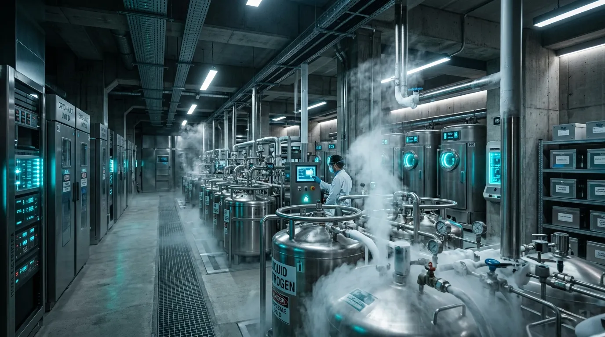
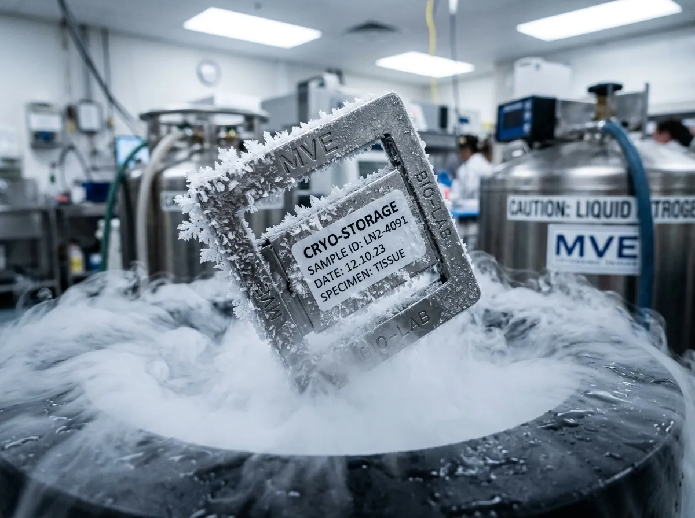
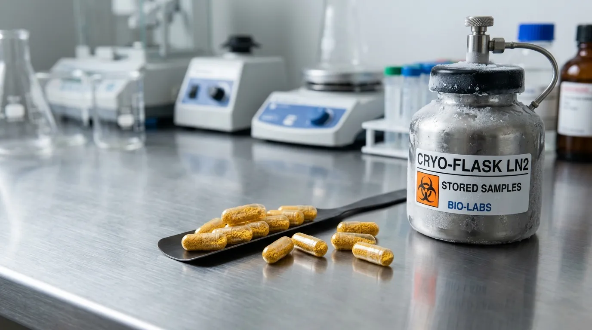

Cryogenic Autologous Microbiome Banking Stored at -196°C
Certified anaerobic vitrification and cold-chain banking engineered for post-oncology gastrointestinal reconstitution.
Modern medical interventions and broad-spectrum antibiotics routinely wipe out ancestral bacterial strains that cannot be recovered through commercial dietary probiotics. We isolate and vitrify your pristine baseline microbiome in liquid nitrogen vapour inside fortified subterranean vaults. When therapeutic depletion occurs, we deliver your exact genetic flora in targeted, triple-encapsulated lyophilised capsules.
The Pre-Morbid Imperative: Why Banking Baseline Ecology Is Essential
The human gastrointestinal tract harbours over one thousand distinct anaerobic bacterial species, many of which are obligate anaerobes that perish within minutes of atmospheric oxygen exposure. Once aggressive chemotherapy, severe systemic infection, or recurrent courses of fluoroquinolones eradicate these indigenous strains, standard commercial probiotics—derived from dairy fermentations—fail to engraft or restore functional metabolic diversity.
Our Alderley Edge vault isolates full-spectrum cellular flora under pure argon environments within four hours of clinical receipt. We replace conventional toxic cryo-protectants with pharmaceutical trehalose solutions, allowing microbial cells to flash-freeze into vitrified glass states at minus one hundred and ninety-six degrees Celsius without ice crystal membrane shearing.
Stored in stainless steel vapour cassettes, your personal ecology remains biologically suspended for decades without colony attenuation. Should clinical intervention compromise your internal flora, we lyophilise your banked strain library into acid-resistant enteric micro-capsules, ensuring targeted distal release and instantaneous re-colonisation of your native ancestral microbiome.

Cryo-Storage & Delivery Matrix
Clinical-grade bio-banking configurations engineered for decades-long biological stability.
Baseline Vitrification Cassette
- 5-year reserve duration
- 50 cryogenic aliquots
- Trehalose vitrification
Decadal Master Vault
- 10-year vault allocation
- Dual-site redundancy
- Autonomous LN2 top-up
Lyophilised Rescue Batch
- 120 enteric capsules
- 10¹¹ CFU per dose
- Acid-resistant delivery
Research Genomic Slant
- 16S rRNA sequencing profile
- Full-spectrum library
- Clinical pathology archive
Anaerobic Cryo-Chain Protocol
Our laboratory custody process maintains rigid containment with zero atmospheric oxygen contamination, ensuring absolute viability of obligate anaerobes.
Argon-Chamber Homoeostasis
Specimens are immediately processed under pure argon to prevent oxygen-induced cellular degradation.
Density-Gradient Centrifugation
Inert cellular separation isolating pure bacterial fractions from metabolic waste.
Programmable Trehalose Freezing
Gradual thermal reduction at -1°C/min down to -80°C, followed by a direct liquid nitrogen dip.
Vapour Storage at -196°C
Long-term suspension in vapour-phase nitrogen cassettes without ice crystal shearing.

Manchester Oncology Recovery Unit
Following aggressive cyclophosphamide regimes, autologous microbiome re-colonisation demonstrated functional engraftment within 72 hours, eliminating the prolonged vulnerability window associated with conventional commercial probiotics.
Northwest Clinical Trials Network
Clinical telemetry verified that trehalose-based vitrification preserved the delicate Bacteroides and Firmicutes phyla ratios exactly matching the pre-morbid patient baseline, a result unattainable with standard dairy-derived ferments.
Cryo-Preservation Technical FAQ
How does trehalose efficacy compare to DMSO toxicity?
Unlike Dimethyl Sulfoxide (DMSO) which permeates and degrades cellular structures, our pharmaceutical trehalose formulations stabilise the exterior lipid membranes. This non-permeating cryo-protectant prevents ice crystal shearing while avoiding the cytotoxicity associated with standard DMSO protocols.
Is sample transit stable in the vacuum shipping flask?
Yes. Our bespoke dry-ice vacuum shippers guarantee internal temperatures remain below -70°C for up to 96 hours. This certified cold-chain protocol ensures absolute microbial stability during clinical transit.
What are the enteric capsule shell dissolution timings?
Our triple-coated Eudragit polymer shells are precisely calibrated for pH-dependent dissolution. They bypass acidic gastric environments intact and dissolve exclusively within the distal small intestine over a 45-minute therapeutic window.
Who retains legal ownership of the biological matter?
The banked genetic flora remains your exclusive biological property under UK clinical tissue regulations. We act solely as custodians of the vitrified material until your prescribing clinician authorises release.
Are emergency cold-chain courier dispatches available?
Absolutely. For acute post-antibiotic depletion, we operate a 24-hour dispatch protocol. Dedicated medical couriers deliver the lyophilised rescue batch directly to your clinical facility under continuous thermal telemetry.
Vault Requisition & Clinical Intake Terminal
Direct supply of temperature-controlled sample collection kits for private clients and referring gastroenterologists.
Facility Address
The Subterranean VaultsAlderley Edge, Cheshire
SK9 7HG, United Kingdom
Clinical Liaisons
Direct Laboratory Line:
01625 558 196
24/7 Cold-Chain Emergency Dispatch Available